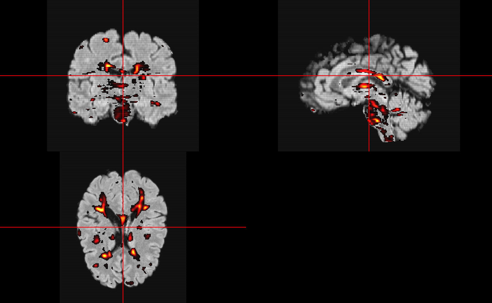

library(neurobase)
#> Loading required package: oro.nifti
#> oro.nifti 0.10.1
#> Registered S3 method overwritten by 'R.oo':
#> method from
#> throw.default R.methodsS3
library(flexconn)Installing FLEXCONN
FLEXCONN stands for Fast Lesion Extraction using Convolutional Neural Networks, which the main goal is to segment lesions from magnetic resonance images (MRIs) from patients with multiple sclerosis (MS). The methods are described here: https://arxiv.org/abs/1803.09172. Patients with MS commonly have 2 MRI sequences done, T1-weighted images and fluid attenuated inversion recovery (FLAIR) FLEXCONN requires a number of Python modules to run. You can install them either system wide (not shown) or using reticulate. The reticulate way is wrapped in install_flexconn:
Downloading a Model
Here we download one of the fit models from FLEXCONN 1.1 (https://www.nitrc.org/projects/flexconn/), which is from one reader, a 35x35 patch size (2D model) and it was fit using 21 atlases.
model_file = tempfile(fileext = ".h5")
base_url = paste0(
"https://github.com/muschellij2/flexconnr",
"/raw/master/inst/extdata/")
model_url = paste0(
base_url, "21atlases/",
"atlas_with_mask1/FLEXCONNmodel2D_35x35_17-10-2017_21-53-35.h5")
download.file(model_url, destfile = model_file)We will load the model into R so we can predict using it
model = keras::load_model_hdf5(model_file)
model
#> Model
#> Model: "model_1"
#> ___________________________________________________________________________
#> Layer (type) Output Shape Param # Connected to
#> ===========================================================================
#> input_1 (InputLayer) [(None, None, No 0
#> ___________________________________________________________________________
#> input_2 (InputLayer) [(None, None, No 0
#> ___________________________________________________________________________
#> conv2d_1 (Conv2D) (None, None, Non 1280 input_1[0][0]
#> ___________________________________________________________________________
#> conv2d_6 (Conv2D) (None, None, Non 1280 input_2[0][0]
#> ___________________________________________________________________________
#> conv2d_2 (Conv2D) (None, None, Non 204864 conv2d_1[0][0]
#> ___________________________________________________________________________
#> conv2d_7 (Conv2D) (None, None, Non 204864 conv2d_6[0][0]
#> ___________________________________________________________________________
#> conv2d_3 (Conv2D) (None, None, Non 18464 conv2d_2[0][0]
#> ___________________________________________________________________________
#> conv2d_8 (Conv2D) (None, None, Non 18464 conv2d_7[0][0]
#> ___________________________________________________________________________
#> conv2d_4 (Conv2D) (None, None, Non 12816 conv2d_3[0][0]
#> ___________________________________________________________________________
#> conv2d_9 (Conv2D) (None, None, Non 12816 conv2d_8[0][0]
#> ___________________________________________________________________________
#> conv2d_5 (Conv2D) (None, None, Non 1160 conv2d_4[0][0]
#> ___________________________________________________________________________
#> conv2d_10 (Conv2D) (None, None, Non 1160 conv2d_9[0][0]
#> ___________________________________________________________________________
#> concatenate_1 (Concaten (None, None, Non 0 conv2d_5[0][0]
#> conv2d_10[0][0]
#> ___________________________________________________________________________
#> conv2d_11 (Conv2D) (None, None, Non 18560 concatenate_1[0][0]
#> ___________________________________________________________________________
#> conv2d_12 (Conv2D) (None, None, Non 204864 conv2d_11[0][0]
#> ___________________________________________________________________________
#> conv2d_13 (Conv2D) (None, None, Non 18464 conv2d_12[0][0]
#> ___________________________________________________________________________
#> conv2d_14 (Conv2D) (None, None, Non 12816 conv2d_13[0][0]
#> ___________________________________________________________________________
#> conv2d_15 (Conv2D) (None, None, Non 1160 conv2d_14[0][0]
#> ___________________________________________________________________________
#> conv2d_16 (Conv2D) (None, None, Non 73 conv2d_15[0][0]
#> ===========================================================================
#> Total params: 733,105
#> Trainable params: 733,105
#> Non-trainable params: 0
#> ___________________________________________________________________________Downloading Data
Again, we need a T1-weighted and FLAIR image to do prediction. We download some example data here
t1_file = tempfile(fileext = ".nii.gz")
download.file(paste0(base_url, "T1.nii.gz"),
destfile = t1_file)
t1 = readnii(t1_file)
ortho2(robust_window(t1))
flair_file = tempfile(fileext = ".nii.gz")
download.file(paste0(base_url, "FLAIR.nii.gz"),
destfile = flair_file)
flair = readnii(flair_file)
ortho2(robust_window(flair))
Predicting Lesions
Here we will predict using the pre-trained model and we
res = flexconn_predict(model,
t1 = t1_file,
flair = flair_file)
#> Normalizing Images
#> 99th quantile is 1136581.36, bandwidth =14207.267, gridsize =80
#> 4 peaks found.
#> Peak found at 1044511.80550394 for T1
#> 99th quantile is 34706, bandwidth =433.825, gridsize =80
#> 5 peaks found.
#> Peak found at 28277.2167322835 for FL
#> Predicting from model
#> ===========================================================================Here we overlay the probabilities on the FLAIR image:
col.y = oro.nifti::hotmetal()
col.y = col2rgb(col.y, alpha = 0.5)
col.y = rgb(col.y[1,], col.y[2,], col.y[3,], col.y[4,], maxColorValue = 255)
ortho2(robust_window(flair), res, col.y = col.y)
Here we see we have a probability map of lesions. To get a binary mask, we can use the remove_small_components, which thresholds the image and removes voxels with fewer than 27 connected voxels: